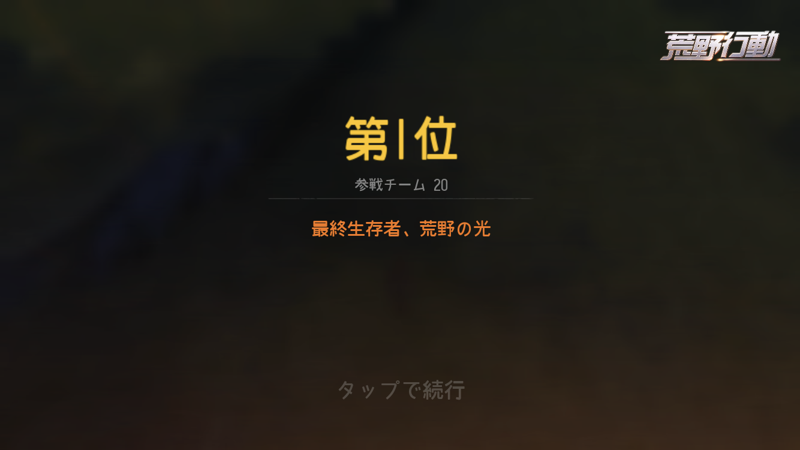

 中国企業のNetEase Gamesが開発、運営するiOS、Android、Windows用TPSバトルロイヤルゲームで、約100人のプレイヤーが無人島に降り立ち、最後の1人になるまで戦闘を繰り広げるサバイバルゲーム。
| 名前 | ダメージ | 連射速度 | 射程距離 | 弾数（（）内は最高値） | 反動（（）内は最低値） |
|---|---|---|---|---|---|
| M4A1 | 41 | 12 | 550 | 30(40) | 9(6.8) |
| 95式 | 43 | 12 | 550 | 30(65) | 10(6.5) |
| 81式 | 45 | 12 | 550 | 30(40) | 10(8.5) |
| M16A4 | 42 | 9 | 550 | 30(40) | 10(8.5) |
| AK-47 | 48 | 10 | 550 | 30(40) | 12(10.2) |
| S-ACR | 41 | 11 | 550 | 30(40) | 11(7.2) |
| M27 | 41 | 12 | 550 | 30(40) | 9(5.8) |
| AUG | 41 | 11 | 550 | 42 | 11(9.3) |
| ADS水陸小銃 | 48 | 10 | 240 | 30 | 10.5 |
| APS水陸小銃 | 55 | 10 | 240 | 15 | 11.5 |
| AR | |
|---|---|
| 1位 | 95式 |
| 2位 | M27 |
| 3位 | M4A1 |
| 4位 | 81式 |
| 5位 | AK-47 |
| 6位 | M16A4 |
| 7位 | S-ACR |
| 8位 | AUG |
| 9位 | ADS水陸小銃 |
| 10位 | APS水陸小銃 |